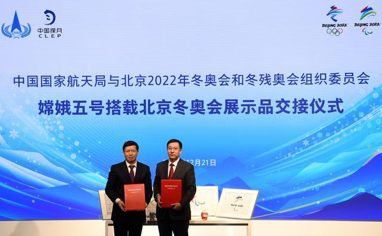
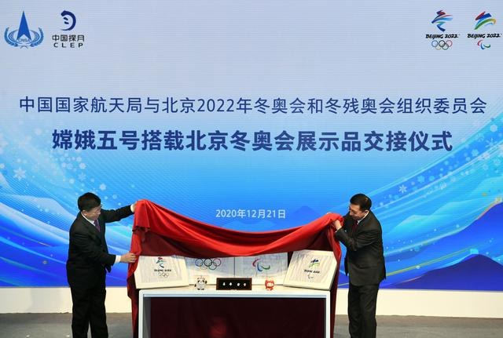
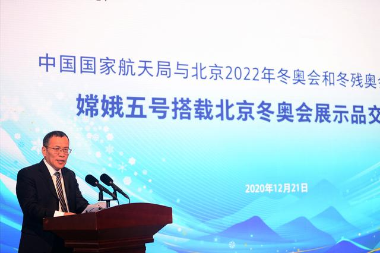
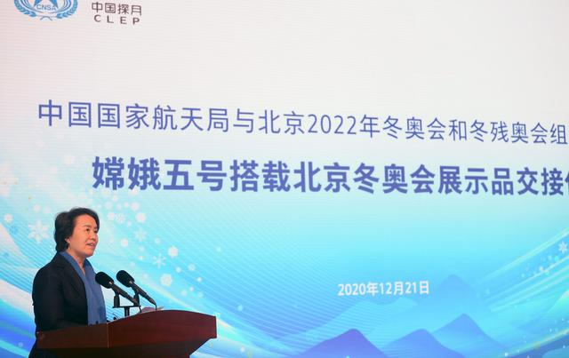
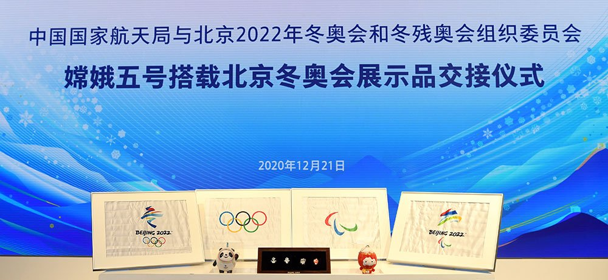

12月21日，在中国传统节气冬至到来之际，嫦娥五号搭载北京冬奥会展示品交接仪式在北京冬奥组委首钢办公区举行。完成月球之旅的北京2022年冬奥会和冬残奥会会旗、会徽、吉祥物，首次与公众见面。
12月17日，嫦娥五号在太空遨游23天之后，首次实现了我国地外天体采样返回。与此同时，这次嫦娥五号探测器上还搭载了国际奥委会会旗一面、国际残奥委会会旗一面、北京冬奥会和冬残奥会会旗各一面、会徽两对、吉祥物手办一对、吉祥物徽章两对。这些冬奥会展示品是最具代表性、最受关注、最能阐释北京冬奥会和冬残奥会理念、愿景的形象标识。
北京市副市长、北京冬奥组委执行副主席张建东，国家航天局副局长吴艳华共同为嫦娥五号搭载北京冬奥会展示品揭幕。交接仪式现场还播放了冬奥展示品装载至探测器和从探测器取出的视频。
国家航天局总工程师刘永德表示，此次嫦娥五号搭载北京冬奥会展示品任务成功完成，实现了航天科技与冬奥文化的完美融合，是中国航天与中国体育携手共进，推动我国向航天强国、体育强国迈进的有利支撑。
北京冬奥组委专职副主席、秘书长韩子荣表示，嫦娥五号在太空遨游23天之后，圆满完成我国首次月球无人采样返回任务。这一成就的取得，是追逐梦想、勇于探索、协同攻坚、合作共赢的探月精神的生动写照，与更快、更高、更强的奥林匹克精神高度契合，也激励了大家进一步凝心聚力办好冬奥会的信心和决心。
她介绍说：“国家航天局积极参与冬奥筹办工作，今年7月双方签订战略合作框架协议，在重大航天工程方面开展合作。这次嫦娥五号探测器上搭载会旗、会徽、吉祥物等冬奥会展示品，把冬奥标识送上月球并顺利返回、交付给冬奥组委，是战略合作的重大成果，创造了奥林匹克文化与航天科技融合创新的典范。下一步，这些冬奥会展示品将带着来自太空的‘祝福’，与世界人民见面，吸引包括广大航天事业爱好者在内的社会各界更加关注、支持北京冬奥会。”
北京冬奥组委计划将北京冬奥会展示品在北京冬奥组委展厅、相关场馆进行宣传展示，并将通过举行有关文化活动对公众，尤其是青少年，宣传北京冬奥会，介绍冬季冰雪体育运动和科普航天知识。
探月工程三期嫦娥五号任务是探月工程“绕、落、回”三步走规划的收官之作，实现月球表面采样返回，意义重大，受到全世界广泛关注。嫦娥五号探测器于2020年11月24日在文昌航天发射场成功发射，并与2020年12月17日成功返回地球。